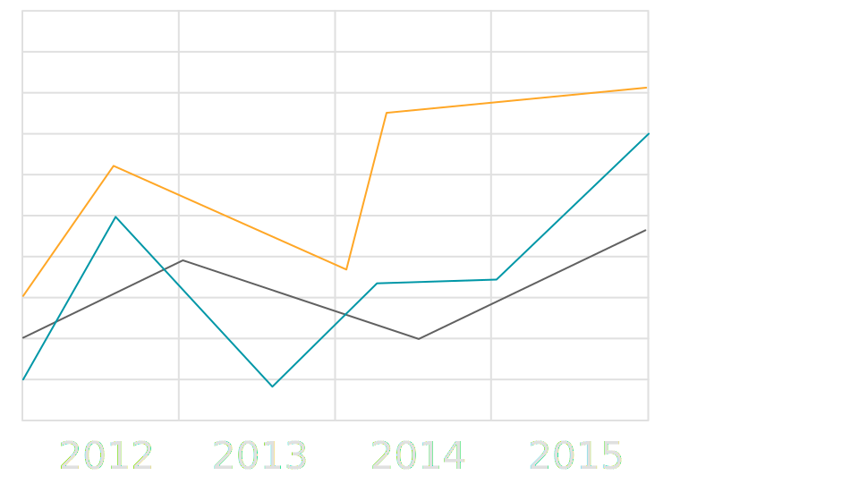

ADP Employment Report
ADP Employment Report
ADP’s Monthly Employment Report is closely monitored by business leaders, policymakers, journalists, economists, and financial market professionals as an early indicator of the state of the US economy and labor markets. Here, we provide three visualizations to help explore the jobs data.
Compatibility: this website is optimized for viewing on Desktop, in Google Chrome.

Jobs Explorer
Ideal for Journalists, Business Leaders, and Researchers
Explore the monthly employment figures since 2005. Visualize trends by region, sector, and industry, using filters to drill-down to the insights you need. Export your visualizations as PDF or images for easy sharing.